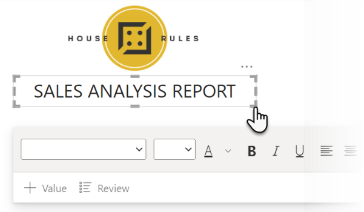

Lab 5 – Creating a report

After designing queries and a data model, we now have all the information we need to start answering
the grain statements which were bought up in our original meeting. We will build a multi-page report that groups
various visuals together. Our report will have a branded cover page with a general sales summary on it. We will also
create pages for our products, customer insights, sales by county and sales by region. During this series of
exercises, we may ask you to be creative and decide on some of the visual choices based on your preferences.
For this exercise you will need to open your House Rules Sales Analysis
project file which was completed in Lab 4. If you did not finish the last lab, we have a completed file for you to
continue from. Simply open your download pack, and open the folders Completed Labs > Lab 4 – Data Model then open the PBIX file and continue working from this save point.
Exercise 1 – Create new pages with basic content
In this exercise we will provision the pages we need with some of the basic content including shapes
and images to structure our pages.
- In Power BI Desktop, click on Report view in the rail menu
- At the bottom of the page, right click on the Page
1 tab and choose Rename Page
- Name the page Sales Summary and press Enter on
your keyboard
- Using the + icon to the right of the Sales
Summary page tab, create 4 more pages

- Use the Rename Page command which we used in step 2, rename the pages as
follows:
- Page 1 – Product Overview
- Page 2 – Customer Insights
- Page 3 – Sales by County
- Page 4 – Sales by Region
- Select the Sales Summary page, here we will add the company
logo, in the Insert tab, click on Image from the Elements category
- In File Explorer navigate to your download pack and open the folder
called House Rules Branding and select the House Rules Gaming Clear
logo and click Open
- Resize and position the logo at the top of the report as shown below:

- In the Insert tab of the ribbon click on Text
box
- Enter Sales Analysis Report into the text box, alter the font, and size
to your taste, then resize and position the text below the company logo (you don’t have to use CAPS)

- We now have the basic content on our home page, we will now add some visuals
Exercise 2 – Adding and configuring visuals
Next, we will add a selection of visualisations to the various pages within our report. These visuals
serve to make the data in our model more interactive and understandable. When picking certain visuals, we may suggest
some alternative choices to give you some creativity with this report.
Sales Summary
- On the Sales Summary page, in the Visualisations
pane select Line chart (if
you do not see the visualisations pane, deselect any of the elements currently on the page)
- Resize the line chart to fit the bottom of the page, like the layout below:

- With the visual selected, expand the Sales table in the Fields pane and drag the Purchase Year into the X-axis well in the Visualizations pane

- Drag the Sales Revenue field from Sales into the
Y-axis well
- Drag the Country field from Customers into the Legend well
- With the visual still selected, click on the Ribbon chart
 and your visual will change from a line chart to a
ribbon chart… do you prefer it? If not click Undo at the top of the page
and your visual will change from a line chart to a
ribbon chart… do you prefer it? If not click Undo at the top of the page
- Optionally, use the Format
 button in the Visualizations pane, then
use Ribbons > Colors to update the look of the visual, below is an example with brand
colours
button in the Visualizations pane, then
use Ribbons > Colors to update the look of the visual, below is an example with brand
colours

- Once you are happy with the Sales Summary page, select the Product
Overview page
Product Overview
- On this page we want to visually showcase our current product line up with some core information
about each product, to make this work we will use custom visuals, in the Insert tab of the
ribbon, click on More visuals > From AppSource (if asked to sign
in, use your trial tenant email and password)
- In the Search box type in Chiclet, select Chiclet Slicer and choose Add followed by OK